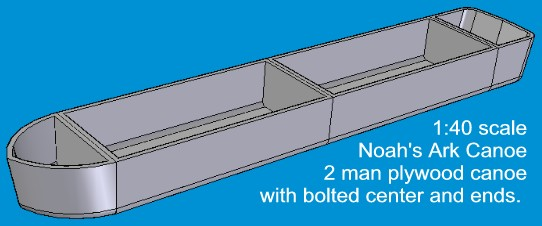
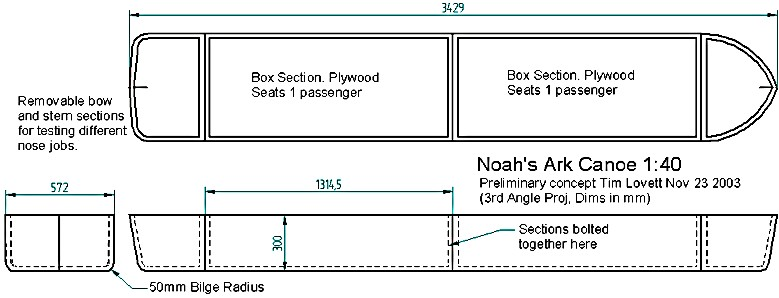
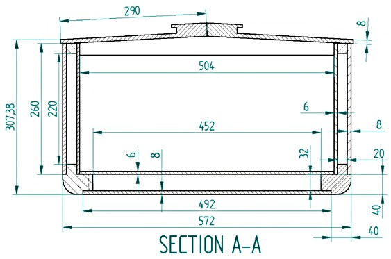

COPYRIGHT Tim Lovett © 2003
.
.
.
|
On a grander scale (well short of Noah's efforts), let's look at a Noah's Ark canoe. Using the Ark Scale Calculator we can quickly try different sizes and compare the required wood volumes and weight that can be carried. I opted for a two man canoe, bolted together in the middle. This makes it easy to transport and store, and wood is most common in 2400mm (8ft) lengths (in Australia anyway). |
 |

What's with that strange looking pointy end? Nothing really. It's just a possible hull detail. Thankfully, the Bible gives the length, breadth and depth - otherwise this website would be not happening. The Bible doesn't give any more clues on the hull SHAPE.
So what should it look like?
We can make some educated guesses. For more information, see What Shape?
It appears the bow and stern should not be excessively blunt. I did notice the small model tended to plough into a wave rather than ride over the top, and the NA (Naval Architect) working with me reckons the blunt bow is a problem in high seas. So, let's whack on some different ends and see how it goes in the water. (That's the plan at this stage anyhow).
No photos...(Yet)...
A bit more detail
This design uses a foam filled double wall - to keep the weight down. (And wouldn't make a bad storage box for cold food). The ends are 17mm ply to give plenty of strength for attachment. Expanding polyurethane rigid foam is poured in (though holes) after the hull is constructed.

| Part | Material | Length | Width | Qty |
| Keel Inner | ply 6mm | 1280 | 504 | 2 |
| Keel outer | ply 8mm | 1314 | 492 | 2 |
| Side inner | ply 6mm | 1280 | 260 | 4 |
| Side Outer | ply 8mm | 1314 | 260 | 4 |
| Roof | ply 8mm | 1314 | 290 | 4 |
| Bilge radius | pine | 1314 | 40x40 | 4 |
| Keel spacers | pine | 452 | 32x20 | 8 |
| Keel rails | pine | 1280 | 32x20 | 4 |
| Roof beams | pine | 504 | 40x20 | 10 |
| Side long rails | pine | 1280 | 20x20 | 8 |
| Side spacers | pine | 220 | 20x20 | 12 |
ABOUT THE SCALE CALCULATOR
The Scale Calculator converts the Biblical cubit measurements to the size of your model. All the dimensions are given with detail drawings of each piece, taking into account plywood thickness, cubit length, scale and working units. You can also adjust roof angle and define a roof eave measurement. The calculator works out weight, load capacity, etc. Try it out before you make one!